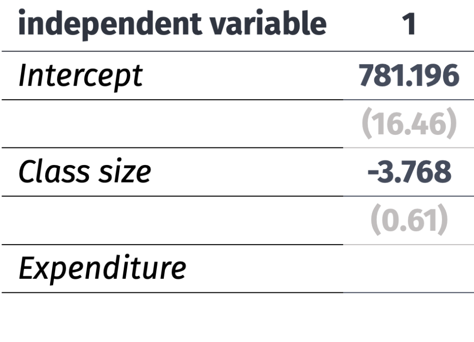
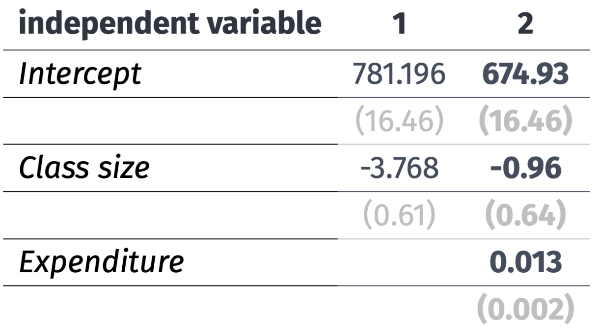
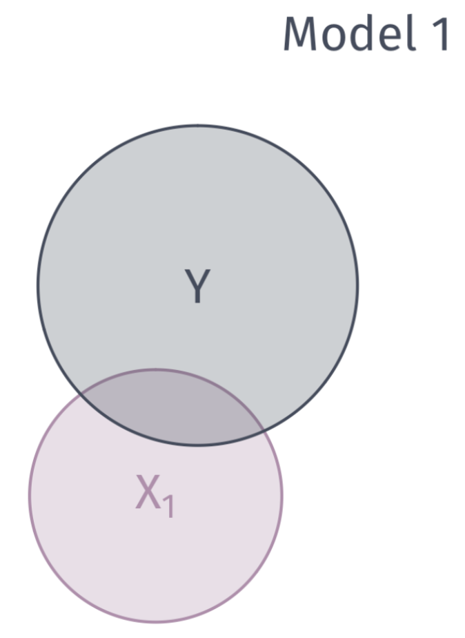

Multiple Variable Regression Analysis
EC 320 - Introduction to Econometrics
2025
Prologue
Quick Recap
The Regression Model
We can estimate the effect of \(X\) on \(Y\) by estimating a regression model:
\[Y_i = \beta_0 + \beta_1 X_i + u_i\]
\(Y_i\) is the outcome variable.
\(X_i\) is the treatment variable (continuous).
\(\beta_0\) is the intercept parameter. \(\mathop{\mathbb{E}}\left[ {Y_i | X_i=0} \right] = \beta_0\)
\(\beta_1\) is the slope parameter, which under the correct causal setting represents marginal change in \(X_i\)’s effect on \(Y_i\). \(\frac{\partial Y_i}{\partial X_i} = \beta_1\)
\(u_i\) is an error term including all other (omitted) factors affecting \(Y_i\).
The error term
\(u_i\) is quite special
Consider the data generating process of variable \(Y_i\),
- \(u_i\) captures all unobserved relationships that explain variation in \(Y_i\).
Some error will exist in all models, our aim is to minimize error under a set of constraints. This error is the price we are willing to accept for simplified model
The error term
Five items contribute to the existence of the disturbance term:
1. Omission of explanatory variables
2. Aggregation of Variables
3. Model misspecificiation
4. Functional misspecificiation
5. Measurement error
Running regressions
Using an estimator with data on \(X_i\) and \(Y_i\), we can estimate a fitted regression line:
\[ \hat{Y}_{i} = \hat{\beta}_{0} + \hat{\beta}_{1} X_i \]
- \(\hat{Y}_{i}\) is the fitted value of \(Y_i\).
- \(\hat{\beta}_{0}\) is the estimated intercept.
- \(\hat{\beta}_{1}\) is the estimated slope.
This procedure produces misses, known as residuals, \(Y_{i} - \hat{Y}_{i}\)
Gauss-Markov Theorem
OLS is the Best Linear Unbiased Estimator (BLUE) when the following assumptions hold:
A1. Linearity: The population relationship is linear in parameters with an additive error term.
A2. Sample Variation: There is variation in \(X\).
A3. Exogeniety: The \(X\) variable is exogenous
A4. Homoskedasticity: The error term has the same variance for each value of the independent variable
A5. Non-autocorrelation: The values of error terms have independent distributions
Consider the following example.
Ex. Effect of Class Sizes on Test Scores
- Empirical question:
-
What improvement do smaller class sizes have on student test scores, if any?
Ex. Effect of class sizes on test scores
Estimate effect of class size on test scores with the following:
\[ \text{Scores}_i = \beta_0 + \beta_1 \text{Class Size}_i + u_i \]
Data: Test performance and class across school districts in MA
- Scores: 4th grade test scores agg. across reading, math, and science
- Class size: Ratio of number of students to teachers
Always plot your data first
Raw Data
Fitting OLS
Ex. Effect of class sizes on test scores
Estimate effect of class size on test scores with the following:
\[ \text{Scores}_i = \beta_0 + \beta_1 \text{Class Size}_i + u_i \]
Q. How might smaller class sizes influence test scores?
A. More personalized teaching, less classroom disruptions etc.
Q. What sign would we expect on \(\beta_1\)?
A.
\[ \beta_1 < 0 \]
Smaller class sizes (X) increases test scores (Y)
Ex. Effect of class sizes on test scores
Estimate effect of class size on test scores with the following:
\[ \text{Scores}_i = \beta_0 + \beta_1 \text{Class Size}_i + u_i \]
Q. Do we think \(\beta_1\) will be a good guess of the underlying population parameter?
A. In \(u_i\), several variables are correlated with class size and test scores
Such as… school funding, which might affect:
- Textbooks
- Computers
- Teacher salary
- Attract high income parents
Smaller class sizes (X) increases test scores (Y)
Smaller class sizes (X) increases test scores (Y) along with greater school funding (U)
Smaller class sizes (X) increases test scores (Y) along with greater school funding (U). And, school funding (U) is correlated with test scores (X).
Any unobserved variable that connects a backdoor path between class size (X) and test scores (Y) will bias our point estimate of \(\beta_1\).
Any unobserved variable that connects a backdoor path between class size (X) and test scores (Y) will bias our point estimate of \(\beta_1\). Why?
A1. Linearity
A2. Sample Variation
A3. Exogeniety
A4. Homoskedasticity
A5. Non-autocorrelation
A6. Normality
Any unobserved variable that connects a backdoor path between class size (X) and test scores (Y) will bias our point estimate of \(\beta_1\). Why?
A1. Linearity
A2. Sample Variation
A3. Exogeniety: The \(X\) variable is exogenous
A4. Homoskedasticity
A5. Non-autocorrelation
A6. Normality
Any unobserved variable that connects a backdoor path between class size (X) and test scores (Y) will bias our point estimate of \(\beta_1\). Why?
A. Because is violates the exogeniety assumption
\[ \mathop{\mathbb{E}}\left( u|\text{Class Size} \right) \neq 0 \]
Correlation between class size and school funding (\(u_i\)) is not zero.
Graphically… Valid exogeniety, i.e., \(\mathop{\mathbb{E}}\left( u \mid X \right) = 0\)
Graphically… Invalid exogeniety, i.e., \(\mathop{\mathbb{E}}\left( u \mid X \right) \neq 0\)
What the actual data looks like:
This violation has a name. We call it omitted variable bias
Omitted Variable Bias
Omitted variable bias
Bias that occurs in statistical models when a relevant variable is not included in the model.
Consequence: Leads to the incorrect estimation of the relationships between variables, which may affect the reliability of the model’s predictions and inferences.
Solution: “Control” for the omitted variable(s).
Class funding (U) confounds our estimates of smaller class sizes (X) on test scores (Y).
Any unobserved variable that connects a backdoor path between class size (X) and test scores (Y) will bias our point estimate of \(\beta_1\).
Class funding (U) confounds our estimates of smaller class sizes (X) on test scores (Y). Including data on school funding (U) in a multiple linear regression allows us to close this backdoor path.
With all backdoor paths closed, point estimates of \(\beta_1\) will no longer be biased and will return the population parameter of interest
In a little more detail, we can derive the bias mathematically.
Omitted Variable Bias
Imagine we have a population model of the form:
\[ Y_i = \beta_0 + \beta_1 X_i + \beta_2 Z_i + u_i \]
where \(Z_i\) is a relevant variable that is omitted from the model.
and suppose we estimate the following model:
\[ Y_i = \hat{\beta}_0 + \hat{\beta}_1 X_i + v_i \]
where \(v_i\) is the new error term that absorbs the effect of \(Z_i\)
Omitted Variable Bias
To derive the bias of \(\hat{\beta}_1\), we need to understand the relationship between \(Z_i\) and \(X_i\). Assume that:
\[ Z_i = \gamma_0 + \gamma_1 X_i + \varepsilon_i \]
where \(\varepsilon_i\) is the part of \(Z_i\) that is uncorrelated with \(X_i\)
If we substitute \(Z_i\) into the population model, we get:
\[ \begin{align*} Y_i &= \beta_0 + \beta_1 X_i + \beta_2 \left( \gamma_0 + \gamma_1 X_i + \varepsilon_i \right) + u_i \\ &= \beta_0 + \beta_2 \gamma_0 + \left( \beta_1 + \beta_2 \gamma_1 \right) X_i + \beta_2 \varepsilon_i + u_i \end{align*} \]
Omitted Variable Bias
We can rewrite this expression:
\[ \begin{align*} Y_i &= \beta_0 + \beta_1 X_i + \beta_2 \left( \gamma_0 + \gamma_1 X_i + \varepsilon_i \right) + u_i \\ &= \beta_0 + \beta_2 \gamma_0 + \left( \beta_1 + \beta_2 \gamma_1 \right) X_i + \beta_2 \varepsilon_i + u_i \end{align*} \]
as:
\[ Y_i = \widehat{\beta}_0 + \widehat{\beta}_1 X_i + v_i \]
where:
- \(\widehat{\beta}_0 = \beta_0 + \beta_2 \gamma_0\)
- \(\widehat{\beta}_1 = \beta_1 + \beta_2 \gamma_1\)
- \(v_i = \beta_2 \varepsilon_i + u_i\)
Thus, we can see how \(Z_i\) will bias our estimate of \(\beta_1\)
Omitted Variable Bias
Recall that we define the bias of an estimator as:
\[ \mathop{\text{Bias}}_\theta \left( W \right) = \mathop{\boldsymbol{E}}\left[ W \right] - \theta \]
The bias of the estimator \(\hat{\beta}_1\) is given by:
\[ \begin{align*} \mathop{\text{Bias}}_{\beta_1} \left( \hat{\beta}_1 \right) &= \mathop{\boldsymbol{E}}\left[ \hat{\beta}_1 \right] - \beta_1 \\ &= \mathop{\boldsymbol{E}}\left[ \beta_1 + \beta_2 \gamma_1 \right] - \beta_1 \\ &= \beta_2 \gamma_1 \end{align*} \]
Omitted Variable Bias
Finally, we can write the bias of \(\hat{\beta}_1\) in terms of the correlation between \(X_i\) and \(Z_i\):
\[ \gamma_1 = \frac{\text{Cov}\left( X_i, Z_i \right)}{\text{Var}\left( X_i \right)} \]
Therefore, we can write the bias of \(\hat{\beta}_1\) as:
\[ \mathop{\text{Bias}}_{\beta_1} \left( \hat{\beta}_1 \right) = \beta_2 \frac{\text{Cov}\left( X_i, Z_i \right)}{\text{Var}\left( X_i \right)} \]
Signing the Bias
Sometimes we’re stuck with omitted variable bias.
\[ \mathop{\boldsymbol{E}} \left[ \hat{\beta}_1 \right] = \beta_1 + \beta_2 \dfrac{ \mathop{\text{Cov}} \left( X_i,\, Z_i \right)}{\mathop{\text{Var}} \left( X_i \right)} \]
When this happens, we can often at least know the direction of the bias.
Signing the Bias
Begin with
\[ \mathop{\boldsymbol{E}} \left[ \hat{\beta}_1 \right] = \beta_1 + \beta_2 \dfrac{ \mathop{\text{Cov}} \left( X_i,\, Z_i \right)}{\mathop{\text{Var}} \left( X_i \right)} \]
We know \(\color{#8FBCBB}{\mathop{\text{Var}} \left( X_i \right) > 0}\). Suppose \(\color{#81A1C1}{\beta_2 > 0}\) and \(\color{#EBCB8B}{\mathop{\text{Cov}} \left( X_i,\,Z_i \right) > 0}\). Then
\[ \begin{align} \mathop{\boldsymbol{E}} \left[ \hat{\beta}_1 \right] = \beta_1 + \color{#81A1C1}{(+)} \dfrac{\color{#EBCB8B}{(+)}}{\color{#8FBCBB}{(+)}} \implies \mathop{\boldsymbol{E}} \left[ \hat{\beta}_1 \right] > \beta_1 \end{align} \] ∴ In this case, OLS is biased upward (estimates are too large).
\[ \begin{matrix} \enspace & \color{#EBCB8B}{\text{Cov}(X_i,\,Z_i)> 0} & \color{#EBCB8B}{\text{Cov}(X_i,\,Z_i)< 0} \\ \color{#81A1C1}{\beta_2 > 0} & \text{Upward} & \\ \color{#81A1C1}{\beta_2 < 0} & & \end{matrix} \]
Signing the Bias
Begin with
\[ \mathop{\boldsymbol{E}} \left[ \hat{\beta}_1 \right] = \beta_1 + \beta_2 \dfrac{ \mathop{\text{Cov}} \left( X_i,\, Z_i \right)}{\mathop{\text{Var}} \left( X_i \right)} \]
We know \(\color{#8FBCBB}{\mathop{\text{Var}} \left( X_i \right) > 0}\). Suppose \(\color{#81A1C1}{\beta_2 < 0}\) and \(\color{#EBCB8B}{\mathop{\text{Cov}} \left( X_i,\,Z_i \right) > 0}\). Then
\[ \begin{align} \mathop{\boldsymbol{E}} \left[ \hat{\beta}_1 \right] = \beta_1 + \color{#81A1C1}{(-)} \dfrac{\color{#EBCB8B}{(+)}}{\color{#8FBCBB}{(+)}} \implies \mathop{\boldsymbol{E}} \left[ \hat{\beta}_1 \right] < \beta_1 \end{align} \] ∴ In this case, OLS is biased downward (estimates are too small).
\[ \begin{matrix} \enspace & \color{#EBCB8B}{\text{Cov}(X_i,\,Z_i)> 0} & \color{#EBCB8B}{\text{Cov}(X_i,\,Z_i)< 0} \\ \color{#81A1C1}{\beta_2 > 0} & \text{Upward} & \\ \color{#81A1C1}{\beta_2 < 0} & \text{Downward} & \end{matrix} \]
Signing the Bias
Begin with
\[ \mathop{\boldsymbol{E}} \left[ \hat{\beta}_1 \right] = \beta_1 + \beta_2 \dfrac{ \mathop{\text{Cov}} \left( X_i,\, Z_i \right)}{\mathop{\text{Var}} \left( X_i \right)} \]
We know \(\color{#8FBCBB}{\mathop{\text{Var}} \left( X_i \right) > 0}\). Suppose \(\color{#81A1C1}{\beta_2 > 0}\) and \(\color{#EBCB8B}{\mathop{\text{Cov}} \left( X_i,\,Z_i \right) < 0}\). Then
\[ \begin{align} \mathop{\boldsymbol{E}} \left[ \hat{\beta}_1 \right] = \beta_1 + \color{#81A1C1}{(+)} \dfrac{\color{#EBCB8B}{(-)}}{\color{#8FBCBB}{(+)}} \implies \mathop{\boldsymbol{E}} \left[ \hat{\beta}_1 \right] < \beta_1 \end{align} \] ∴ In this case, OLS is biased downward (estimates are too small).
\[ \begin{matrix} \enspace & \color{#EBCB8B}{\text{Cov}(X_i,\,Z_i)> 0} & \color{#EBCB8B}{\text{Cov}(X_i,\,Z_i)< 0} \\ \color{#81A1C1}{\beta_2 > 0} & \text{Upward} & \text{Downward} \\ \color{#81A1C1}{\beta_2 < 0} & \text{Downward} & \end{matrix} \]
Signing the Bias
Begin with
\[ \mathop{\boldsymbol{E}} \left[ \hat{\beta}_1 \right] = \beta_1 + \beta_2 \dfrac{ \mathop{\text{Cov}} \left( X_i,\, Z_i \right)}{\mathop{\text{Var}} \left( X_i \right)} \]
We know \(\color{#8FBCBB}{\mathop{\text{Var}} \left( X_i \right) > 0}\). Suppose \(\color{#81A1C1}{\beta_2 < 0}\) and \(\color{#EBCB8B}{\mathop{\text{Cov}} \left( X_i,\,Z_i \right) < 0}\). Then
\[ \begin{align} \mathop{\boldsymbol{E}} \left[ \hat{\beta}_1 \right] = \beta_1 + \color{#81A1C1}{(-)} \dfrac{\color{#EBCB8B}{(-)}}{\color{#8FBCBB}{(+)}} \implies \mathop{\boldsymbol{E}} \left[ \hat{\beta}_1 \right] > \beta_1 \end{align} \] ∴ In this case, OLS is biased upward (estimates are too large).
\[ \begin{matrix} \enspace & \color{#EBCB8B}{\text{Cov}(X_i,\,Z_i)> 0} & \color{#EBCB8B}{\text{Cov}(X_i,\,Z_i)< 0} \\ \color{#81A1C1}{\beta_2 > 0} & \text{Upward} & \text{Downward} \\ \color{#81A1C1}{\beta_2 < 0} & \text{Downward} & \text{Upward} \end{matrix} \]
Signing the Bias
Thus, in cases where we have a sense of
the sign of \(\mathop{\text{Cov}} \left( X_i,\,Z_i \right)\)
the sign of \(\beta_2\)
we know in which direction bias pushes our estimates.
Direction of Bias
\[ \begin{matrix} \enspace & \color{#EBCB8B}{\text{Cov}(X_i,\,Z_i)> 0} & \color{#EBCB8B}{\text{Cov}(X_i,\,Z_i)< 0} \\ \color{#81A1C1}{\beta_2 > 0} & \text{Upward} & \text{Downward} \\ \color{#81A1C1}{\beta_2 < 0} & \text{Downward} & \text{Upward} \end{matrix} \]
Multiple Linear Regression
Multiple linear regression
Simple linear regression features one dependent variable and one independent variable:
\[ \color{#434C5E}{Y_i} = \beta_0 + \beta_1 \color{"#81A1C1"}{X_i} + u_i \]
Multiple linear regression features one dependent variable and multiple independent variables:
\[ \color{#434C5E}{Y_i} = \beta_0 + \beta_1 \color{"#81A1C1"}{X_{1i}} + \beta_2 \color{"#81A1C1"}{X_{2i}} + \cdots + \beta_{k} \color{"#81A1C1"}{X_{ki}} + u_i \]
This serves more than one purpose. Multiple independent variables improves predictions, avoids OVB, and better explains variation in \(Y\).
Simple Linear Regression

Add Dimension \(\rightarrow\) Per Student Expenditure

Multiple Linear Regression Ex.
If we ignore per student expenditure (aka our original simple regression)
\[ \text{Scores}_i = \beta_0 + \beta_1 \text{Class Size}_i + u_i \]
Multiple Linear Regression Ex.
Controlling for school funding
\[ \text{Scores}_i = \beta_0 + \beta_1 \text{Class Size}_i + \text{Expenditure}_i+ u_i \]
OLS Estimation
Residuals are now defined as:
\[ \hat{u}_i = Y_i - \hat{\beta}_0 - \hat{\beta}_1 X_{1i} - \hat{\beta}_2 X_{2i} - \cdots - \hat{\beta}_{k} X_{ki} \]
As with SLR, OLS minimizes the sum of squared residuals (RSS).
\[ \begin{align*} \color{#D08770}{RSS} &= \sum_{i = 1}^{n} (Y_i - \hat{\beta}_0 - \hat{\beta}_1 X_{1i} - \hat{\beta}_2 X_{2i} - \cdots - \hat{\beta}_{k} X_{ki})^2 \\ &= \color{#D08770}{\sum_{i=1}^n \hat{u}_i^2} \end{align*} \]
which is a familiar expression.
OLS Estimation
To obtain point estimates:
\[ \min_{\hat{\beta}_0,\, \hat{\beta}_1,\, \dots \, \hat{\beta}_k} \quad \color{#D08770}{\sum_{i=1}^n \hat{u}_i^2} \]
- Take partial derivatives of RSS with respect to each \(\hat{\beta}\)
- Set each derivative equal to zero
- Solve the system of \(k+1\) equations1.
The algebra is cumbersome. We let R do the heavy lifting.
Coefficient Interpretation
Model
\[ \color{}{Y_i} = \beta_0 + \beta_1 \color{}{X_{1i}} + \beta_2 \color{}{X_{2i}} + \cdots + \beta_{k} \color{}{X_{ki}} + u_i \]
Interpretation
- The intercept \(\hat{\beta}_0\) is the average value of \(Y_i\) when all of the independent variables are equal to zero.
- Slope parameters \(\hat{\beta}_1, \dots, \hat{\beta}_{k}\) give us the change in \(Y_i\) from a one-unit change in \(X_j\), holding the other \(X\) variables constant.
Algebraic properties of OLS
The OLS first-order conditions yield the same properties as before.
1. Residuals sum to zero: \(\sum_{i=1}^n \hat{u_i} = 0\).
2. The sample covariance \(X_i\) and the \(\hat{u_i}\) is zero.
3. The point \((\bar{X_1}, \bar{X_2}, \dots, \bar{X_k}, \bar{Y})\) is on the fitted regression “line.”
Goodness of fit
Fitted values are defined similarly:
\[ \hat{Y_i} = \hat{\beta}_0 + \hat{\beta}_1 X_{1i} + \hat{\beta}_2 X_{2i} + \cdots + \hat{\beta}_{k} X_{ki} \]
The formula for \(R^2\) is the same as before:
\[ R^2 =\frac{\sum(\hat{Y_i}-\bar{Y})^2}{\sum(Y_i-\bar{Y})^2} \]
Goodness of fit
We can describe the variation explain in \(Y\) with venn diagrams

Goodness of fit
We can describe the variation explain in \(Y\) with venn diagrams

As we add more variables, we are able to explain more “chunks” of the variation in \(y\)
Problem: As we add variables to our model, \(R^2\) mechanically increases.
Let me show you this problem with a simulation
Simulate a dataset of 10,000 observations on \(y\) and 1,000 random \(x_k\) variables, where
\[ y \perp x_k \quad \forall x_k \; \text{s.t.} \; k = 1, 2, \dots, 1000 \]
We have 1,000 independent variables that are independent to the dependent variable. Each \(x_k\) has no relationship to \(y\) whatsoever.
Problem: As we add variables to our model, \(\color{#314f4f}{R^2}\) mechanically increases.
Pseudo-code:
Generate 10,000 obs. on \(y\)
Generate 10,000 obs. on variables \(x_1\) through \(x_{1000}\)
Regressions:
- LM1: Regress \(y\) of \(x_1\); record \(R^2\)
- LM2: Regress \(y\) of \(x_1\) and \(x_2\); record \(R^2\)
- …
- LM1000: Regress \(y\) on \(x_1\), \(x_2\), …, \(x_{1000}\); record \(R^2\)
Problem: As we add variables to our model, \(R^2\) mechanically increases.

Problem: As we add variables to our model, \(R^2\) mechanically increases.
One solution: Penalize for the number of variables, e.g., adjusted \(R^2\):

Goodness of fit
Problem: As we add variables to our model, \(R^2\) mechanically increases.
One solution: Penalize for the number of variables, e.g., adjusted \(R^2\):
\[ \bar{R}^2 = 1 - \dfrac{\sum_i \left( Y_i - \hat{Y}_i \right)^2/(n-k-1)}{\sum_i \left( Y_i - \bar{Y} \right)^2/(n-1)} \]
Note: Adjusted \(R^2\) need not be between 0 and 1.
Multiple regression
There are tradeoffs to remember as we add/remove variables:
Fewer variables
- Explains less variation in \(y\)
- Provide simple interpretations and visualizations
- More worried about omitted-variable bias
More variables
- More likely to find spurious relationships1
- More difficult interpretation
- The variance of our point estimates will be bigger
- We still might have omitted-variable bias
Multiple regression
There are tradeoffs to remember as we add/remove variables:
Fewer variables
- Explains less variation in \(y\)
- Provide simple interpretations and visualizations
- More worried about omitted-variable bias
More variables
- More likely to find spurious relationships1
- More difficult interpretation
- The variance of our point estimates will be bigger
- We still might have omitted-variable bias
Multicollinearity
OLS variances
Multiple regression model:
\[ Y_i = \beta_0 + \beta_1 X_{1i} + \beta_2 X_{2i} + \cdots + \beta_{k} X_{ki} + u_i \]
It can be shown that the estimator \(\hat{\beta}_j\) on independent variable \(X_j\) is:
\[ \mathop{\text{Var}} \left( \hat{\beta_j} \right) = \dfrac{\sigma^2}{\left( 1 - R^2_j \right)\sum_{i=1}^n \left( X_{ji} - \bar{X}_j \right)^2}, \]
where \(R^2_j\) is the \(R^2\) from a regression of \(X_j\) on the other independent variables and the intercept
OLS variances
\[ \mathop{\text{Var}} \left( \hat{\beta_j} \right) = \dfrac{{\color{#81A1C1}\sigma^2}}{\left( 1 - \color{#81A1C1}{R_j^2} \right)\color{#BF616A}{\sum_{i=1}^n \left( X_{ji} - \bar{X}_j \right)^2}}, \]
Moving parts:
1. Error variance: As \(\color{#81A1C1}{\sigma^2}\) increases, \(Var(\hat{\beta}_j)\) increases
2. Total variation in \(X_j\): As \(\color{#BF616A}{\sum_{i=1}^n \left( X_{ji} - \bar{X}_j \right)^2}\) increases, \(Var(\hat{\beta}_j)\) decreases
3. Relationship across \(X_i\): As \(\color{#81A1C1}{R_j^2}\) increases, \(Var(\hat{\beta}_j)\) increases
3. is better known as Multicollinearity
Multicollinearity
Case in which two or more independent variables in a regression model are highly correlated.
One independent variable can predict most of the variation in another independent variable.
Multicollinearity leads to imprecise estimates. Becomes difficult to distinguish between individual effects from of independent variables.
OLS Assumptions
Classical assumptions for OLS change slightly for multiple OLS
A1. Linearity: The population relationship is linear in parameters with an additive error term.
A2. Sample Variation: No \(X\) variable is a perfect linear combination of the others
A3. Exogeniety: The \(X\) variable is exogenous
A4. Homoskedasticity: The error term has the same variance for each value of the independent variable
A5. Non-autocorrelation: The values of error terms have independent distributions
Perfect Collinearity
Case in which two or more independent variables in a regression model are perfectly correlated.
Ex. 2016 Election
OLS simultaneously cannot estimate parameters for white and nonwhite.

R drops perfectly collinear variables for you.
Multicollinearity Ex.
Suppose that we want to understand the relationship between crime rates and poverty rates in US cities. We could estimate the model
\[ \text{Crime}_i = \beta_0 + \beta_1 \text{Poverty}_i + \beta_2 \text{Income}_i + u_i \]
Before obtaining standard errors, we need:
\[ \mathop{\text{Var}} \left( \hat{\beta}_1 \right) = \dfrac{\sigma^2}{\left( 1 - R^2_1 \right)\sum_{i=1}^n \left( \text{Poverty}_{i} - \overline{\text{Poverty}} \right)^2} \]
\(R^2_1\) is the \(R^2\) from a regression of poverty on median income:
\[ \text{Poverty}_i = \gamma_0 + \gamma_1 \text{Income}_i + v_i \]
Multicollinearity
Scenario 1: \(\text{Income}_i\) explains most variation in \(\text{Poverty}_i\), then \(R^2_1 \rightarrow 1\)
- Violates the no perfect collinearity assumption
Scenario 2: If \(\text{Income}_i\) explains no variation in \(\text{Poverty}_i\), then \(R^2_1 = 0\)
Q. In which scenario is the variance of the poverty coefficient smaller?
\[ \mathop{\text{Var}} \left( \hat{\beta}_1 \right) = \dfrac{\sigma^2}{\left( 1 - R^2_1 \right)\sum_{i=1}^n \left( \text{Poverty}_{i} - \overline{\text{Poverty}} \right)^2} \]
A. Scenario 2.
Multicollinearity
As the relationships between the variables increase, \(R^2_j\) increases.
For high \(R^2_j\), \(\mathop{\text{Var}} \left( \hat{\beta_j} \right)\) is large:
\[ \mathop{\text{Var}} \left( \hat{\beta_j} \right) = \dfrac{\sigma^2}{\left( 1 - R^2_j \right)\sum_{i=1}^n \left( X_{ji} - \bar{X}_j \right)^2} \]
- Some view multicollinearity as a “problem” to be solved.
- Either increase power (\(n\)) or drop correlated variables
- Warning: Dropping variables can generate omitted variable bias.
Irrelevant Variables
Suppose that the true relationship between birth weight and in utero exposure to toxic air pollution is
\[ (\text{Birth Weight})_i = \beta_0 + \beta_1 \text{Pollution}_i + u_i \]
Suppose that an “analyst” estimates
\[ (\text{Birth Weight})_i = \tilde{\beta_0} + \tilde{\beta_1} \text{Pollution}_i + \tilde{\beta_2}\text{NBA}_i + u_i \]
One can show that \(\mathop{\mathbb{E}} \left( \hat{\tilde{\beta_1}} \right) = \beta_1\) (i.e., \(\hat{\tilde{\beta_1}}\) is unbiased).
However, the variances of \(\hat{\tilde{\beta_1}}\) and \(\hat{\beta_1}\) differ.
Irrelevant Variables
We can reasonably say that the NBA has no direct impact on birth weight, so it is doing more damage to the model than helping
Irrelevant Variables
The variance of \(\hat{\beta}_1\) from estimating the “true model” is
\[ \mathop{\text{Var}} \left( \hat{\beta_1} \right) = \dfrac{\sigma^2}{\sum_{i=1}^n \left( \text{Pollution}_{i} - \overline{\text{Pollution}} \right)^2} \]
The variance of \(\hat{\tilde\beta}_1\) from estimating the model with the irrelevant variable is
\[ \mathop{\text{Var}} \left( \hat{\tilde{\beta_1}} \right) = \dfrac{\sigma^2}{\left( 1 - R^2_1 \right)\sum_{i=1}^n \left( \text{Pollution}_{i} - \overline{\text{Pollution}} \right)^2} \]
Irrelevant Variables
Notice that \(\mathop{\text{Var}} \left( \hat{\beta_1} \right) \leq \mathop{\text{Var}} \left( \hat{\tilde{\beta_1}} \right)\) since,
\[ \sum_{i=1}^n \left( \text{Poll.}_{i} - \overline{\text{Poll.}} \right)^2 \geq \left( 1 - R^2_1 \right)\sum_{i=1}^n \left( \text{Poll.}_{i} - \overline{\text{Poll.}} \right)^2 \]
A tradeoff exists when including more control variables. Make sure you have good reason for your controls because including irrelevant control variables increase variances
Estimating Error Variance
We cannot observe \(\sigma^2\), so we must estimate it using the residuals from an estimated regression:
\[ s_u^2 = \dfrac{\sum_{i=1}^n \hat{u}_i^2}{n - k - 1} \]
- \(k+1\) is the number of parameters (one “slope” for each \(X\) variable and an intercept).
- \(n - k - 1\) = degrees of freedom.
- Using the first 5 OLS assumptions, one can prove that \(s_u^2\) is an unbiased estimator of \(\sigma^2\).
Standard Errors
The formula for the standard error is the square root of \(\mathop{\text{Var}} \left( \hat{\beta_j} \right)\):
\[ \mathop{\text{SE}}(\hat{\beta_j}) = \sqrt{ \frac{s^2_u}{( 1 - R^2_j ) \sum_{i=1}^n ( X_{ji} - \bar{X}_j )^2} } \]
F-Tests
F Tests
t tests allow us to test simple hypotheses involving a single parameter.
- e.g., \(\beta_1 = 0\) or \(\beta_2 = 1\).
F tests allow us to test hypotheses that involve multiple parameters.
- e.g., \(\beta_1 = \beta_2\) or \(\beta_3 + \beta_4 = 1\).
F Tests
Ex. Is money “fungible”?
Economists often say that “money is fungible.”
We might want to test whether money received as income actually has the same effect on consumption as money received from tax credits.
\[ \text{Consumption}_i = \beta_0 + \beta_1 \text{Income}_{i} + \beta_2 \text{Credit}_i + u_i \]
F Tests
Ex. Is money “fungible”?
We can write our null hypothesis as
\[ H_0:\: \beta_1 = \beta_2 \iff H_0 :\: \beta_1 - \beta_2 = 0 \]
Imposing the null hypothesis gives us a restricted model
\[ \text{Consumption}_i = \beta_0 + \beta_1 \text{Income}_{i} + \beta_1 \text{Credit}_i + u_i \]
\[ \text{Consumption}_i = \beta_0 + \beta_1 \left( \text{Income}_{i} + \text{Credit}_i \right) + u_i \]
F Tests
Ex. Is money “fungible”?
To test the null hypothesis \(H_o :\: \beta_1 = \beta_2\) against \(H_a :\: \beta_1 \neq \beta_2\),
we use the \(F\) statistic:
\[ \begin{align} F_{q,\,n-k-1} = \dfrac{\left(\text{RSS}_r - \text{RSS}_u\right)/q}{\text{RSS}_u/(n-k-1)} \end{align} \]
which (as its name suggests) follows the \(F\) distribution with \(q\) numerator degrees of freedom and \(n-k-1\) denominator degrees of freedom.
Here, \(q\) is the number of restrictions we impose via \(H_0\).
F Tests
Ex. Is money “fungible”?
The term \(\text{RSS}_r\) is the sum of squared residuals (RSS) from our restricted model
\[ \text{Consumption}_i = \beta_0 + \beta_1 \left( \text{Income}_{i} + \text{Credit}_i \right) + u_i \]
and \(\text{RSS}_u\) is the sum of squared residuals (RSS) from our unrestricted model
\[ \text{Consumption}_i = \beta_0 + \beta_1 \text{Income}_{i} + \beta_2 \text{Credit}_i + u_i \]
F Tests
Finally, we compare our \(F\)-statistic to a critical value of \(F\) to test the null hypothesis.
If \(F\) > \(F_\text{crit}\), then reject the null hypothesis at the \(\alpha \times 100\) percent level.
- Find \(F_\text{crit}\) in a table using the desired significance level, numerator degrees of freedom, and denominator degrees of freedom.
Aside: Why are \(F\)-statistics always positive?
F Tests
RSS is usually a large cumbersome number.
Alternative: Calculate the \(F\)-statistic using \(R^2\).
\[ \begin{align} F = \dfrac{\left(R^2_u - R^2_r\right)/q}{ (1 - R^2_u)/(n-k-1)} \end{align} \]
Where does this come from?
\(\text{TSS} = \text{RSS} + \text{ESS}\)
\(R^2 = \text{ESS}/\text{TSS}\)
\(\text{RSS}_r = \text{TSS}(1-R^2_r)\)
\(\text{RSS}_u = \text{TSS}(1-R^2_u)\)
EC320, Lecture 05 | Multi Variable Regression